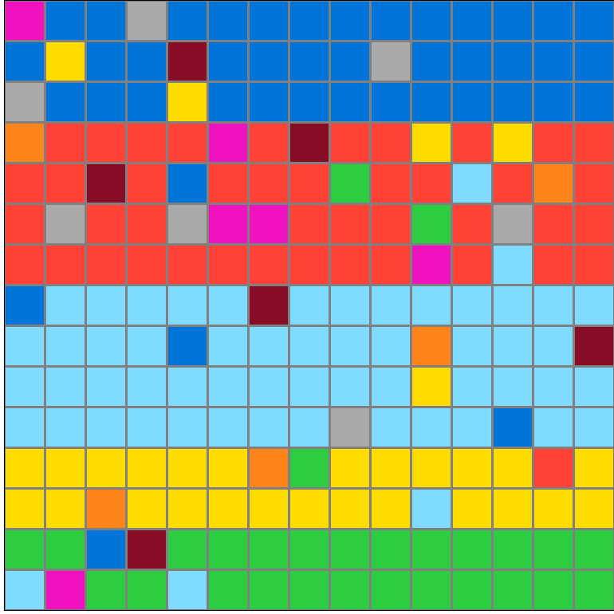
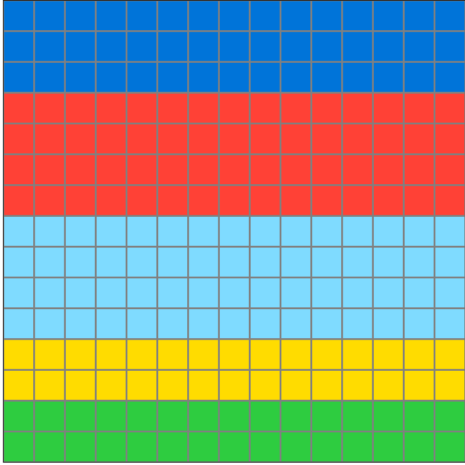

Participant 1
Initial description: Fill in the horizontal sections with the most common color.
Final description: Fill in the horizontal sections with the most common color.

Participant 2
Initial description: I adjusted the colors on the grid according to the most common pattern that was shown across the grid. In this case, pattern was based on the horizontal axis, and I chose changed the outlying colors on the horizontal axis to the most common on each horizontal line of the grid.
Final description: I adjusted the colors on the grid according to the most common pattern that was shown across the grid. In this case, pattern was based on the horizontal axis, and I chose changed the outlying colors on the horizontal axis to the most common on each horizontal line of the grid.

Participant 3
Initial description: This organizes full rectangles of a certain color depending on the dominant color in an area.
Final description: This organizes full rectangles of a certain color depending on the dominant color in an area.

Participant 4
Initial description: Random color grids.
Final description: Blue-Red-Blue-Yellow-Green


Participant 5
Initial description: Each line across the pattern has a majority of the same color. The output displays those colors solidly.
Final description: Each line across the pattern has a majority of the same color. The output displays those colors solidly.

Participant 6
Initial description: Remove the stray colors and fill in based on what the majority color is for that set.
Final description: Remove the stray colors and fill in based on what the majority color is for that set.

Participant 7
Initial description: The rule is to make each bar a single color that is the color of the majority of the colored squares in that bar.
Final description: The rule is to make each bar a single color that is the color of the majority of the colored squares in that bar.

Participant 8
Initial description: The majority color on each line of the input is converted to the majority color for that line on the output.
Final description: The majority color on each line of the input is converted to the majority color for that line on the output.

Participant 9
Initial description: Get rid of color squares that are not part of the majority colors in the horizontal color group.
Final description: Get rid of color squares that are not part of the majority colors in the horizontal color group.

Participant 10
Initial description: Here it looks like the idea is just to take the underlying color bands from the input, and remove the random-looking noise or garbage pixels, resulting in nice, clean bands in the output.
Final description: Here it looks like the idea is just to take the underlying color bands from the input, and remove the random-looking noise or garbage pixels, resulting in nice, clean bands in the output.

Participant 11
Initial description: Restore each section to its primary color.
Final description: Restore each section to its primary color.